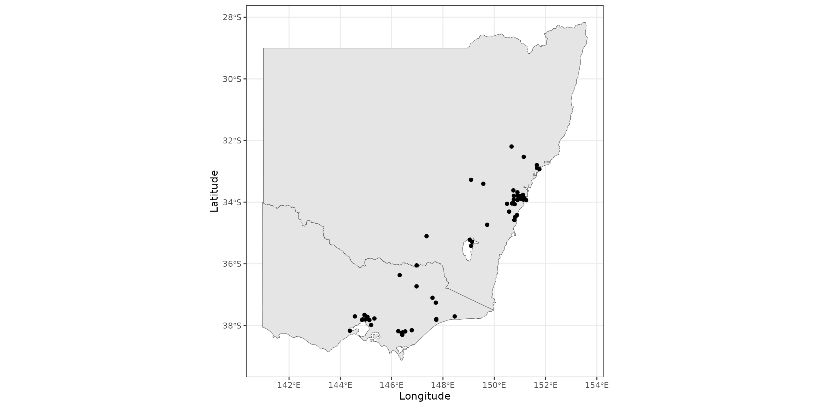
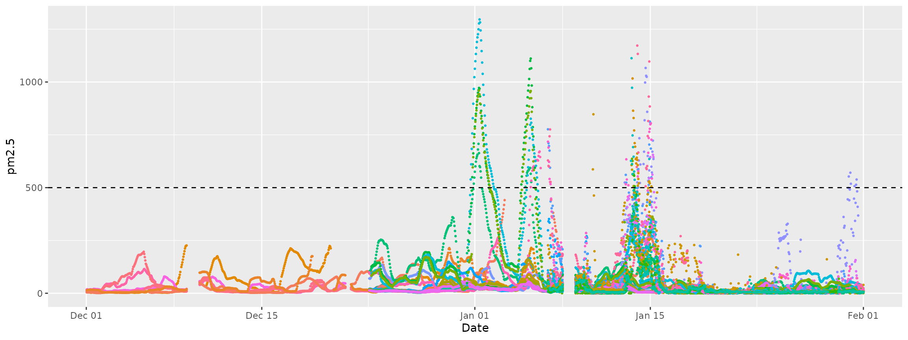

Mapping Air Quality in Australia
map-in-australia.RmdHere we walk through a basic workflow for working with OpenAQ data
inside airpurifyr. The aim is to produce some plots about
the 2019-20
Australian Bushfire Season, where air quality was extremely
poor.
library(airpurifyr)
library(ozmaps)
library(sf)
library(dplyr)
library(ggplot2)
library(colorspace)
library(tsibble)
library(gganimate)The first step when working with airpurifyr is to set
your API key. Register your key at https://explore.openaq.org/register,
and set this key using set_openaq_api_key(). Note you
can access data without an API key, but it is heavily
restricted, so the package will give you a warning for each query you
run without an API key set.
With your API key set, our first task is to find all the locations on the east coast of Australia. This is non-trivial, as the “locations” provided by OpenAQ related to sensors rather than physical locations. The easiest (but most API intensive) method to get locations is to download for a large region, and then filter.
all_aus_locations <- get_measurements_for_location(
country = "AU",
max_observations = 1000,
date_from = lubridate::ymd("2020-01-01"),
date_to = lubridate::ymd("2020-01-14"),
parameter = "pm25"
)Here, we have asked for data from Australia, from 1 Jan 2020 to 14 Jan 2020, restricted to pm2.5. Restricting the date range and the parameter means that we need less API calls. Considering we are only using this data to get a list of stations, the smaller the set the better.
We recommend using about two weeks of time to get locations, as not all sensors report on all days.
Next, we filter down these locations using latitude and longitude, and pull down the data we actually want for a much longer period of time.
locations_of_interest <- all_aus_locations |>
# East coast of Australia (roughly)
dplyr::filter(long > 141, lat < -31) |>
dplyr::distinct(location) |>
dplyr::pull()
au_east_coast_2020 <- get_measurements_for_location(
country = "AU",
location = locations_of_interest,
max_observations = 10000,
date_from = lubridate::ymd("2019-12-01"),
date_to = lubridate::ymd("2020-02-01"),
parameter = "pm25"
)If you run this example, you’ll notice this query takes a very long
time. This is because it is quite a few locations for 90 days, with
sensors generally reporting hourly. Here we have increased the
max_observations parameter which makes each query larger
but reduces the number of queries. If you are having troubles with Error
408 (HTTP timeout) then this can be a fix.
The resulting data looks like this:
head(au_east_coast_2020)
#> # A tibble: 6 × 9
#> location_id location parameter value date_utc unit lat long
#> <int> <chr> <chr> <dbl> <dttm> <chr> <dbl> <dbl>
#> 1 2487 Bathurst pm25 9.9 2020-02-01 00:00:00 µg/m³ -33.4 150.
#> 2 2487 Bathurst pm25 10.3 2020-01-31 23:00:00 µg/m³ -33.4 150.
#> 3 2487 Bathurst pm25 10.8 2020-01-31 22:00:00 µg/m³ -33.4 150.
#> 4 2487 Bathurst pm25 11.3 2020-01-31 21:00:00 µg/m³ -33.4 150.
#> 5 2487 Bathurst pm25 12.1 2020-01-31 20:00:00 µg/m³ -33.4 150.
#> 6 2487 Bathurst pm25 12.4 2020-01-31 19:00:00 µg/m³ -33.4 150.
#> # ℹ 1 more variable: country <chr>We can visualise the stations by looking at their latitude and longitude from the dataset.
states <- ozmaps::ozmap_states |>
filter(NAME %in% c("New South Wales", "Victoria"))
stations <- au_east_coast_2020 |>
distinct(lat, long)
ggplot(states) +
geom_sf() +
geom_point(aes(x = long, y = lat), data = stations) +
theme_bw() +
labs(x="Longitude", y="Latitude")
coord_sf()
#> <ggproto object: Class CoordSf, CoordCartesian, Coord, gg>
#> aspect: function
#> backtransform_range: function
#> clip: on
#> crs: NULL
#> datum: crs
#> default: FALSE
#> default_crs: NULL
#> determine_crs: function
#> distance: function
#> expand: TRUE
#> fixup_graticule_labels: function
#> get_default_crs: function
#> is_free: function
#> is_linear: function
#> label_axes: list
#> label_graticule:
#> labels: function
#> limits: list
#> lims_method: cross
#> modify_scales: function
#> ndiscr: 100
#> params: list
#> range: function
#> record_bbox: function
#> render_axis_h: function
#> render_axis_v: function
#> render_bg: function
#> render_fg: function
#> setup_data: function
#> setup_layout: function
#> setup_panel_guides: function
#> setup_panel_params: function
#> setup_params: function
#> train_panel_guides: function
#> transform: function
#> super: <ggproto object: Class CoordSf, CoordCartesian, Coord, gg>You can see that stations are most dense near major cities, with very little monitoring occurring in regional Australia.
We can look at frequency reporting using a dotplot.
ggplot(au_east_coast_2020, aes(x = date_utc, y = value, color = location)) +
geom_point(size = 0.5) +
guides(colour = "none") +
labs(x = "Date", y = "pm2.5") +
geom_hline(aes(yintercept = 500), linetype = "dashed")
Here, each set of dots represents one station. You can see that there are patches of missingness across all stations.
You can also see the effects of the fires, represented by the large spikes in pm2.5 measurements. According to the Victorian Environmental Protection Authority, pm2.5 levels above 500 (marked by the dashed line in the previous plot) are considered “extremely poor”.